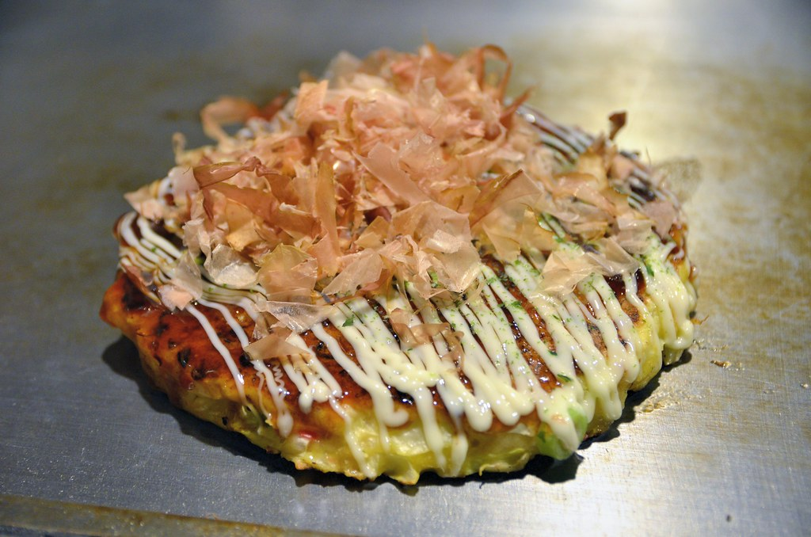

Okonomiyaki

Okonomiyaki is Japanese pankage made of cabbage. It is a traditional food
in Osaka and in some other variations also from Hokkaido.
Ingredients
- 100 g flour
- 100 ml water
- 1 egg
- 1/4 cabbage
- 1 spring onion
- Oil
- Any meat, seafood or vegetable of your choice
- Mayonaise
- Okonomiyaki sauce
Instructions
- Whisk the flour an wateer together.
- Chop the spring onion and the cabbage and add it to the batter.
- Mix the egg into the batter.
- Heat the oil in a large frying pan.
- When the pan is hot, add a circle of batter to the pan.
- Add the meat etc. on the top of the okonomiyaki.
-
When the bottom of the pancake is browned, flip it over and cook it for
5 minutes.